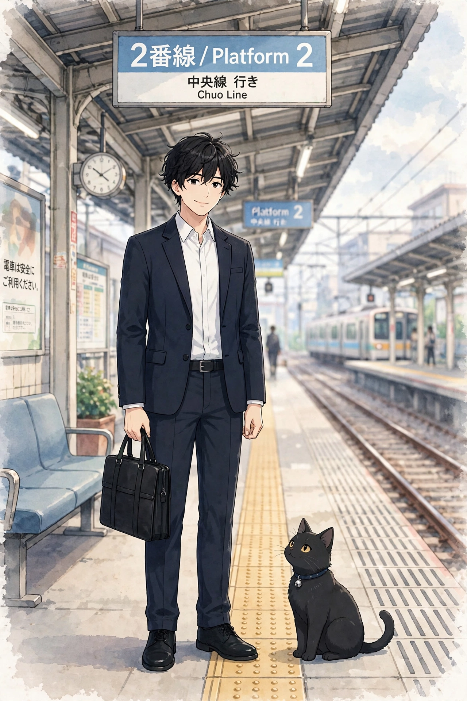

MEN — FASHION FEATURENo.9
ビジネスバッグの選び方｜薄型・本革・軽さ（40代）
TEXT — 222工房（セラピスト／パーソナルトレーナー） GUIDE — ケント＆ノクス

ケント：先に結論です。ビジネスバッグは「自立すること」「PCが入って薄型であること」「重さは1kg台前半まで」の3点で選んでください。重いバッグを片手で持ち続けると、姿勢が傾きます。この記事の商品は、この3点に合うものだけを先に並べます。
この記事の商品（先に比較）
| 商品 | 価格（税込） | お店 |
|---|---|---|
| ビジネスバッグ 本革 薄い スリム メンズ 14型PC可 | 14,980円 | BLUE SINCERE（ブルーシンシア） |
| ＼クーポンで最大2,500円OFF♪／ ブリーフケース | 15,980円 | MURA |
| ビジネスバッグ 本革 メンズ バッグ ブリーフケース | 29,700円 | TRANSIC - メンズ ビジネスバッグ |
基準1：自立する形
床に置いて倒れるバッグは、それだけでだらしく見えます。底に鋲があり、自立する形が目安です。
基準2：薄型でPCが入る
14型PCが入る薄型なら、満員電車でも邪魔になりません。荷物が多い人は、薄型＋サブバッグの分担も考えてください。
基準3：重さと持ち方
本革は見た目が良い反面、重くなりがちです。1kg台前半を目安に、左右の手を時々持ち替えることも姿勢のためになります。
あえて推さないもの
- 膨らんで自立しないバッグ（形が崩れて見えます）
- ロゴの大きなもの（仕事の場で浮きます）
- 重さ2kg近い本革バッグ（肩と姿勢に響きます）
SHOPPING今回のアイテム
この記事の基準に合う商品
特徴：本革の薄型ブリーフケースに絞りました。


あわせて読みたい：ビジネス小物の清潔感／ビジネス小物 種類別ガイド
NEXT — 次に読む革靴は2足で回す｜買い替えの目安（40代メンズ）